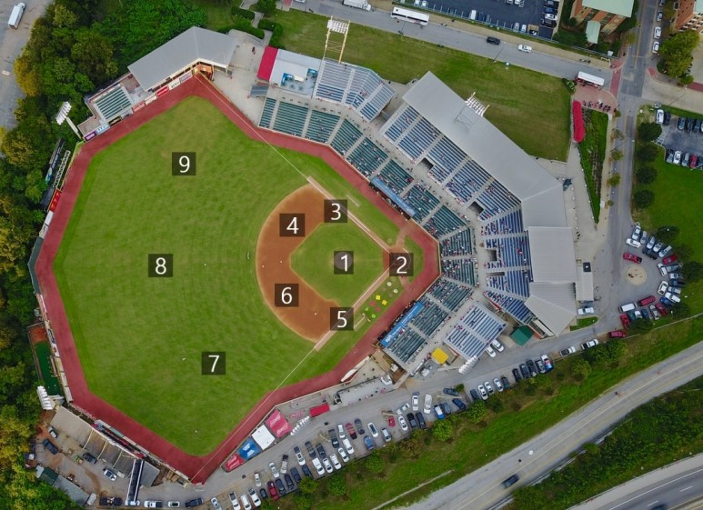
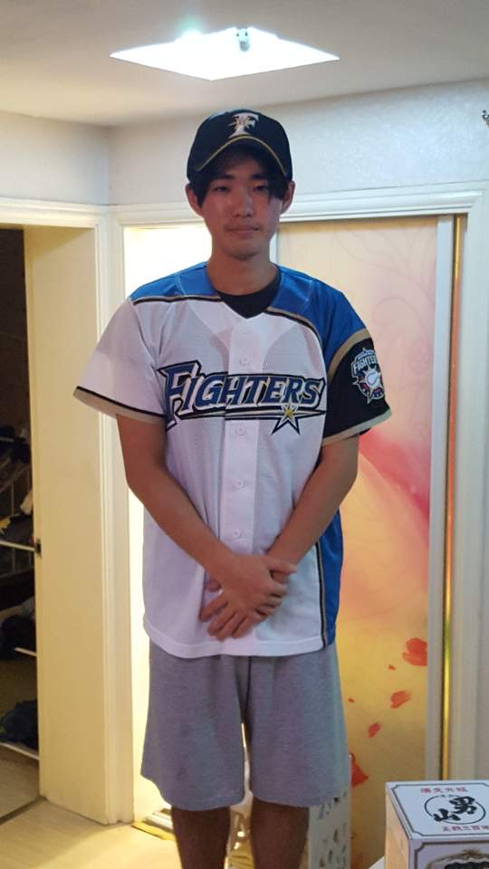

Rules of Defense
야구 경기가 진행되기 위해서는 최소 9명 이상의 선수가 필요합니다. 1명의 투수와 8명의 수비수가 그 요소입니다. 타자들은 각각 투수, 내야수[포수, 1루수, 2루수, 3루수, 유격수]와 외야수[좌익수, 중견수, 우익수]로 수비 포지션을 맡고 있습니다. KBO리그에서는 라인업에 투수 대신 지명타자를 기재합니다.
수비포지션은 제가 사진에 대략적으로 표시해 둔 순서대로 <투수-포수-1루수-2루수-3루수-유격수-좌익수-중견수-우익수>로 구성되어 있습니다.
다음으로 지명타자에 대해 설명드리겠습니다.지명타자는 정해진 포지션없이 수비를 나서지 않고, 투수 대신 타석에만 출전하는 선수를 의미합니다. 단일 리그로 운영되는 KBO와 MLB의 아메리칸리그, NPB의 퍼시픽리그에서는 전체 구단에 대해 지명타자 제도를 시행하고 있지만, MLB의 내셔널 리그와 NPB의 센트럴리그는 지명타자 제도를 도입하지 않고 있습니다.
지명 타자를 출전시키게 된 계기는 투수의 부담감을 덜어주기 위해서 입니다. 투수는 다른 포지션에 비해 체력소모가 심하고, 부상의 위험이 크기 때문에 투구 연습과 상충하는 타격 연습을 진행하기 어려워 1973년 아메리칸 리그에서 먼저 지명타자 제도를 도입하게 되었습니다. 1973년 뉴욕 양키스의 론 블룸버그 선수가 메이저리그 최초로 지명타자로 출전하게 되었지만, 당시에는 반쪽짜리 선수라는 인식이 강했다고 합니다. 하지만 점점 인식이 변화하면서, 지명 타자가 '수비를 못하는 선수'가 아닌 '공격이 뛰어난 선수'로 이해되기 시작하였습니다. 지명타자 제도는 선수들의 체력 안배로도 사용된다고 합니다.